Presentatie 3#
IoT met de micro:bit
Inhoud#
micro:bit radio: best effort
sturen met NodeRed: koppelen van sensoren en actuatoren
later ook: met externe diensten, UI
gebruik van externe diensten
vervolgstappen met NodeRed, IoT
micro:bit radio “best effort communicatie”#
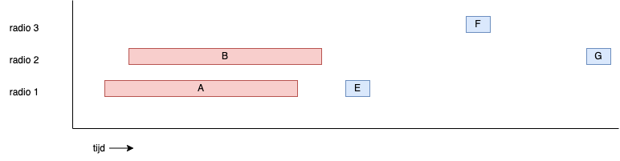
verminderen van kans op collisions
korte berichten
grote tussenpozen
Van best effort naar betrouwbare communicatie#
gebruik van acknowledgement
alleen in bepaalde gevallen nodig
bijv.: events, aansturen actuatoren
bijvoorbeeld:
IP: best effort pakketcommunicatie
IP: in het netwerk
TCP: betrouwbare bytestream-communicatie
TCP: in de eindapparaten
Aan- en uitschakelen: test#
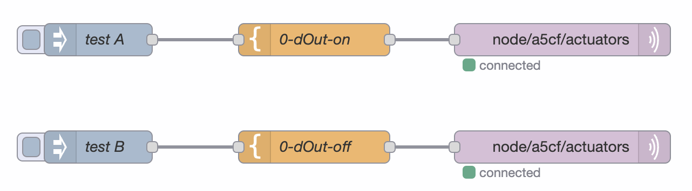
Idempotent interface#
het maakt niet uit of een opdracht 1 maal of vaker uitgevoerd word
A; Bis gelijk aanA; A; A; B; B
voorbeeld: HTTP GET opdracht (“page reload” in de browser)
handig als interface traag en/of onbetrouwbaar is
On- off flow (1)#
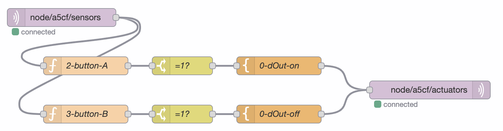
On-off flow (2)#
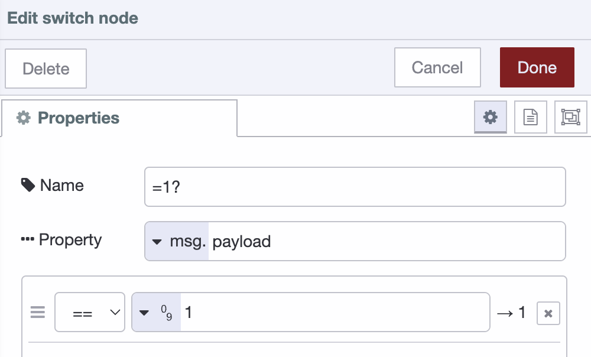
On-off flow (3)#
de
=1?- switch node laat alleen berichten door metpayload.value == 1voor de
dOut-nodes is input-payload niet relevant
Variaties#
stuur het display van een andere microbit aan.
maak een hotelschakelaar: stuur het display van een microbit aan vanuit meerdere andere microbits.
Tijdschakelaar#
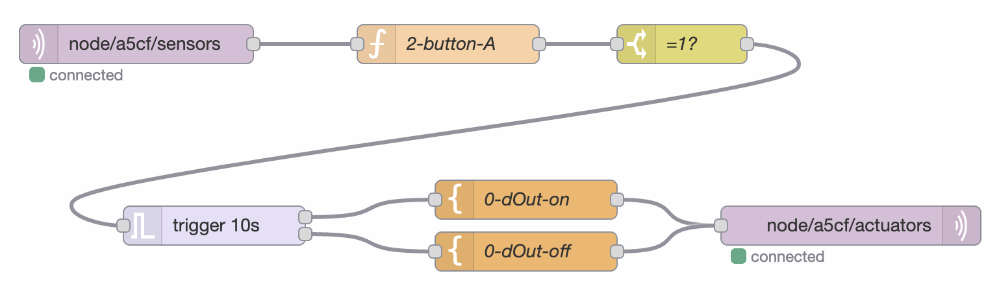
Trigger-node instellingen#
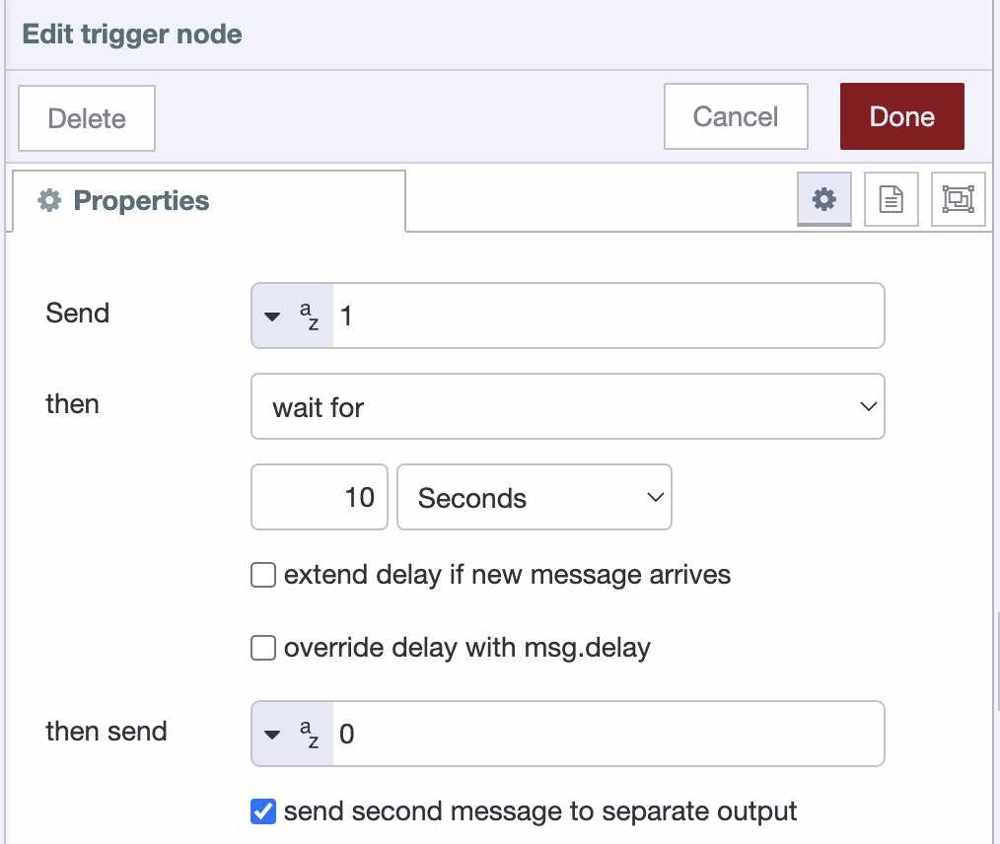
Tijdschakelaar variaties??#
Schakelen op basis van lichtniveau (1)#
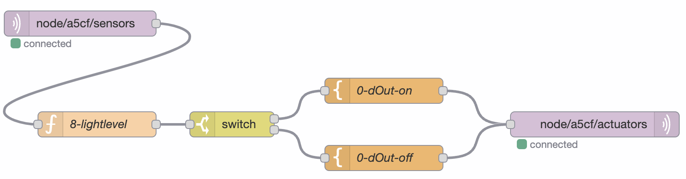
PROBLEEM: eindeloze berichten-lus!
Schakelen op basis van lichtniveau (2)#
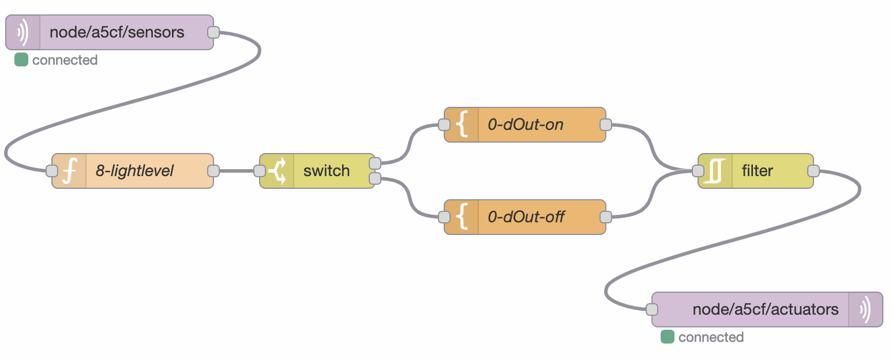
Filter doorbreekt de lus
Combineren van events en signalen (variabelen) (1)#
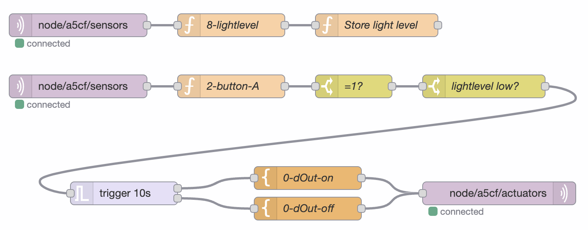
Combineren van events en signalen (variabelen) (2)#
Functie:
flow.set("lightlevel", msg.payload);
return msg;
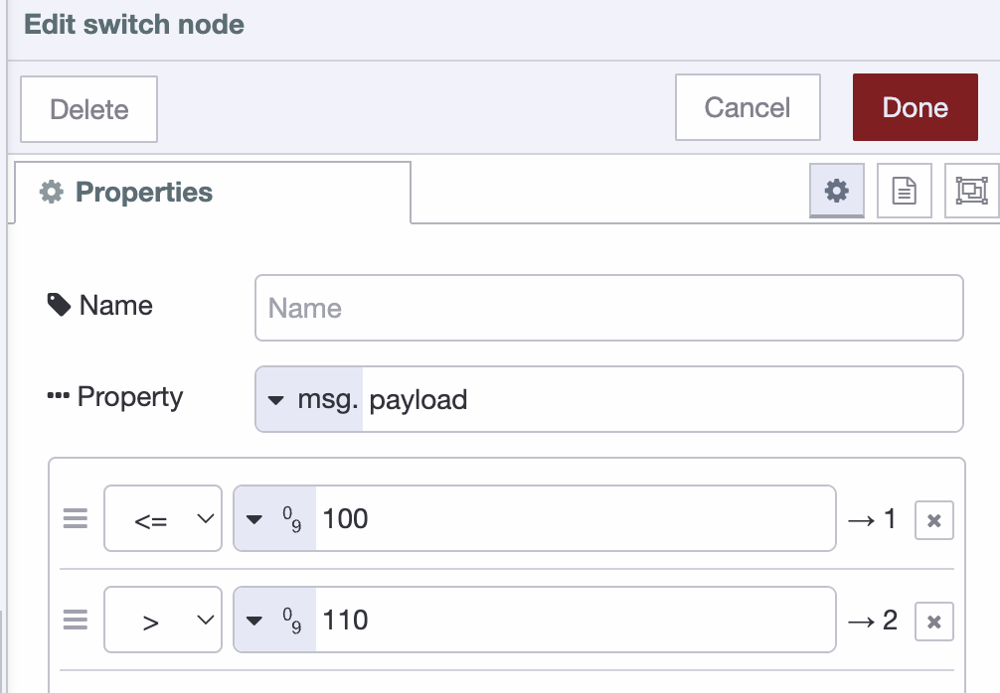
Gebruik van externe diensten (1)#
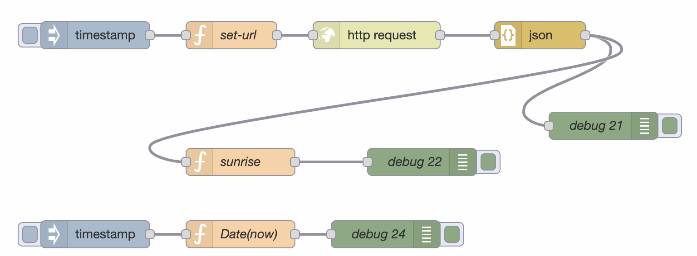
Gebruik van externe diensten (2)#
Zetten van de URL voor HTTP GET:
let api_key = "123ff59900abaabab6b523fc8d574208b99";
let lat = 51.3616254;
let lon = 5.4688644;
msg.url = `https://api.openweathermap.org/data/2.5/weather?lat=${lat}&lon=${lon}&appid=${api_key}`;
return msg;
Gebruik van externe diensten (3)#
openweathermap-data voorbeeld:
{"coord":{"lon":5.4689,"lat":51.3616},
"weather":[{"id":804,"main":"Clouds",
"description":"overcast clouds","icon":"04d"}],
"base":"stations",
"main":{"temp":298.16,"feels_like":298.1,
"temp_min":296.87,"temp_max":300.33,
"pressure":1013,
"humidity":53},
"visibility":10000,
"wind":{"speed":4.12,"deg":220},
"clouds":{"all":100},
"dt":1687176038,
"sys":{"type":1,"id":1527,"country":"NL",
"sunrise":1687144871,"sunset":1687204655},
"timezone":7200,"id":2745860,
"name":"Valkenswaard",
"cod":200}
Volgende stappen#
IoT-materiaal:
-> naar keuzethemas-domein
-> met een extra micro:bit hoofdstuk
verkennen van NodeRed mogelijkheden
aansturen van Hue, Ikea Tradfri, enz.